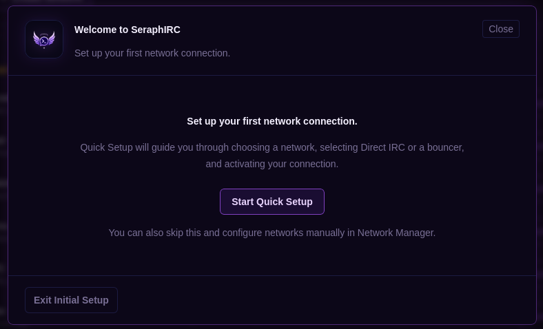
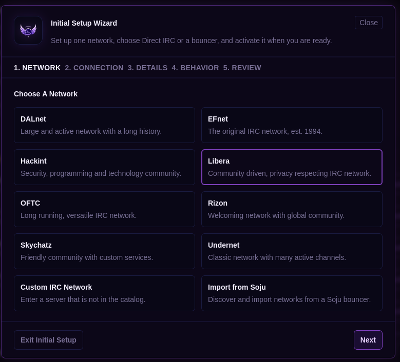
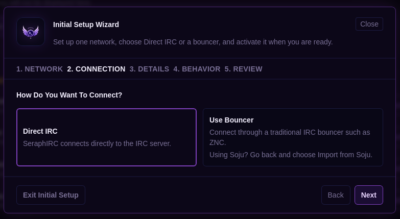
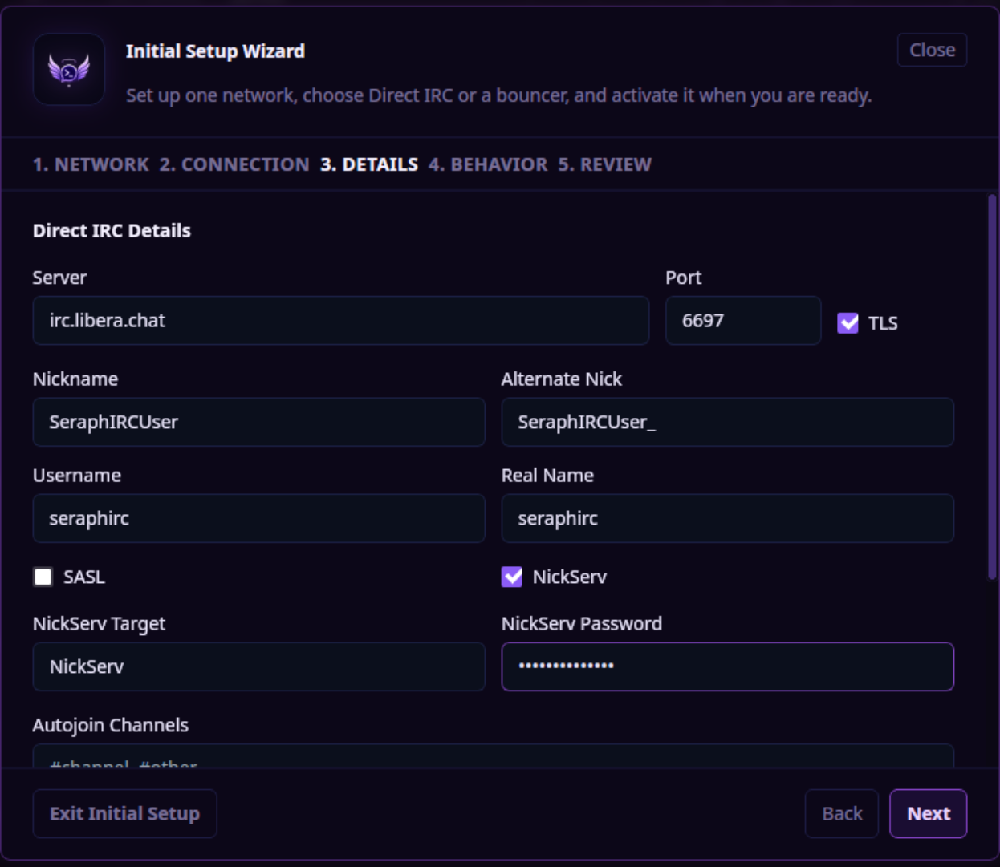
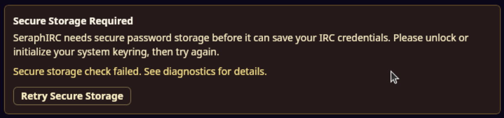
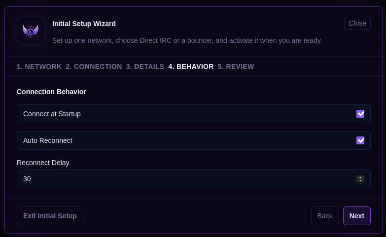
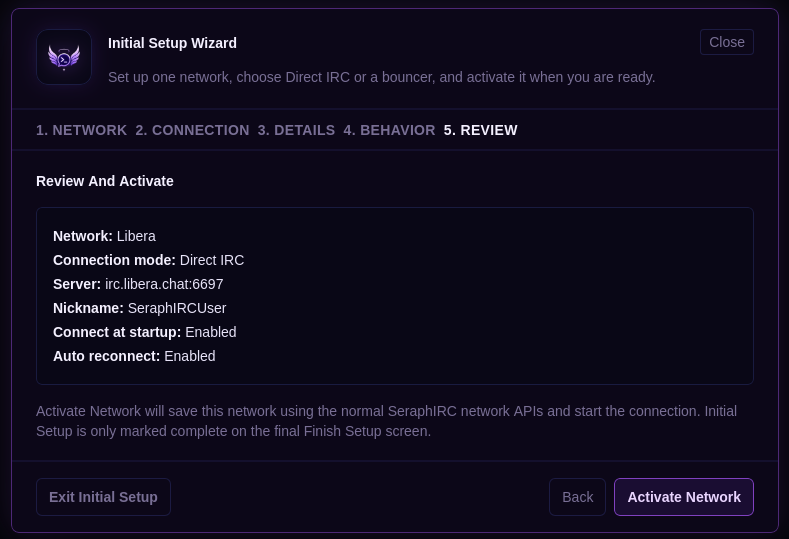
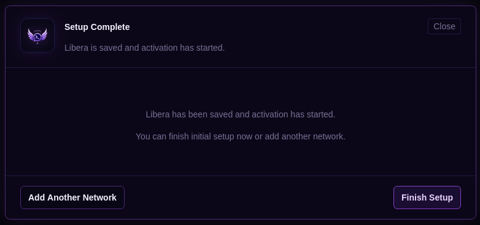

Multi-network IRC
Keep separate networks organized without losing the fast, lightweight feel of IRC.
A love letter to classic IRC
A polished IRC client with feature-rich protocol compatibility, modern UI patterns, privacy-conscious design, and a focus on simplicity for the user.
Familiar, modern
SeraphIRC brings familiar IRC workflows into a calmer, more capable desktop experience.
Keep separate networks organized without losing the fast, lightweight feel of IRC.
Move between busy rooms and direct conversations with clear context and focus.
Authentication workflows are planned around common IRC network expectations.
Find recent conversations while keeping chat history under local user control.
See activity, joins, parts, and availability without turning the interface noisy.
A refined dark foundation with room for personal themes as the client matures.
No analytics, no social growth loops, and defaults shaped around user control.
The desktop alpha is the first step toward a broader cross-device IRC vision.
Protocol compatibility
SeraphIRC negotiates modern IRC capabilities where networks advertise them, while preserving classic IRC behavior as the baseline.
| Capability | Status | Alpha behavior |
|---|---|---|
sasl |
Supported | Requests SASL when enabled and advertised; PLAIN flow is implemented. |
server-time |
Supported | Parses @time and uses valid server timestamps for messages. |
account-notify |
Supported | Tracks account login/logout events and surfaces subtle channel updates. |
account-tag |
Supported | Parses @account metadata when present on messages or users. |
away-notify |
Supported | Tracks away and back changes while the capability is active. |
chghost |
Supported | Handles host changes and updates known ident/host state. |
extended-join |
Supported | Parses JOIN account and real-name metadata. |
cap-notify |
Supported | Handles CAP NEW and CAP DEL safely. |
message-tags |
Supported | Parses and unescapes generic IRCv3 tags in memory. |
echo-message |
Supported | Suppresses duplicate local echo and relies on server echo. |
batch |
Supported | Tracks batch start/end and preserves batch references in message metadata. |
multi-prefix |
Supported | Parses multiple prefixes such as @+nick. |
invite-notify |
Supported | Displays invite notifications without auto-joining channels. |
msgid |
Supported | Parses @msgid and preserves it in in-memory metadata. |
labeled-response |
Partial | Used for labeled WHOIS/NAMES; other response flows use fallback correlation. |
| Persistent IRCv3 metadata | Partial | Tag and msgid metadata is preserved in memory; persistence is not required yet. |
chathistory |
Not implemented | Future sync/history work is planned after the desktop alpha stabilizes. |
Why SeraphIRC?
IRC is a classic chat protocol that has been around for decades.
Still widely used today, IRC thrives in open source communities with a strong culture of privacy and user control. Many of us grew up on IRC, and we continue to love it for its simplicity, speed, and focus on conversation. No ads, no corporate gardens, no data collection, just low-friction conversation.
SeraphIRC is a love letter to that.
Development status
SeraphIRC is currently in active alpha development. Core IRC functionality is being implemented and polished.
First launch
This guide walks through the first-time SeraphIRC setup flow, from choosing a network to configuring credentials and using built-in IRC commands.
Upon first launch, you'll be greeted by the Quick Start Wizard. Click "Start Quick Setup" to continue, or Exit Initial Setup if you prefer to set things up on your own.

After clicking next, you'll be prompted for a default provided network or a custom network not on the list. Advanced users leveraging Soju can choose "Import from Soju" to connect to their Soju bouncer and import their existing networks into SeraphIRC.

On the next screen, you'll be asked if you'd like to connect directly or use a ZNC/other type of bouncer. Note if you are using Soju, the previous screen will take you through the workflow for importing your networks.

On the next screen you can configure standard IRC network details such as nickname, alternate nick, SASL/NickServ, or autojoin channels.

SeraphIRC uses your operating system credential store to securely store passwords. If you have not initialized your secrets store, you'll see a "Secure Storage Required" warning. Click "Retry Secure Storage" and you will be prompted for a credential store password. Once this is completed, click "Next" on the network details dialog.

On the next screen, you can choose whether your network connects at startup, auto reconnects, and what the reconnect delay is.

Once you've clicked next, you'll be presented with a network configuration summary. When you're ready, click "Activate Network."

Once your network is activated, you'll be able to Add Another Network or Finish Setup. Once setup is finished, your newly configured network will show up in your left treebar, and you're ready to go..

Slash commands
Once logged in to a server, you may type /help in order to get a list
of available commands. For convenience, that list is also provided here.
/connect or /connect <server> [port] [remote] | Connect the active network or request a server link |
|---|---|
/cycle [#channel] | Part and rejoin a channel |
/disconnect | Immediately disconnect the active network |
/join <#channel> | Join a channel |
/part [#channel] [reason] | Leave a channel |
/partall | Leave all joined channels on the active network |
/quit [reason] | Gracefully quit the active network |
/reconnect | Reconnect the active network |
/znc <command> | Send a command to ZNC |
/ctcp <target> <command> [args] | Send a CTCP request |
|---|---|
/me <action> | Send an action message |
/msg <nick|#channel> <message> | Send a private or target message |
/notice <target> <message> | Send an IRC NOTICE |
/query <nick> | Open a private query buffer |
/admin [server] | Request server administrator information |
|---|---|
/away [message] | Mark yourself away |
/back | Clear away status |
/ban <nick|mask> or /ban <#channel> <nick|mask> | Ban a nick or mask from a channel |
/deop <nick> | Remove channel operator status |
/devoice <nick> | Remove voice from a nick |
/info [server] | Request server information |
/invite <nick> <#channel> | Invite a nick to a channel |
/ison <nick> [nick...] | Check whether nicknames are online |
/kick <nick> [reason] or /kick <#channel> <nick> [reason] | Kick a user from a channel |
/kickban <nick> [reason] or /kickban <#channel> <nick> [reason] | Ban and kick a user from a channel |
/list [pattern] | Open channel list |
/lusers [args] | Request IRC network user/server statistics |
/mode <target> [modes] [args] | Send MODE command |
/motd [server] | Fetch the server Message of the Day |
/names [#channel] | Request channel user names |
/nick <newnick> | Change nickname |
/op <nick> | Give channel operator status |
/time [server] | Request the server time |
/topic [text] | Show or set channel topic |
/unban <nick|mask> or /unban <#channel> <nick|mask> | Remove a ban from a channel |
/userhost <nick> [nick...] | Request user/host information |
/users [args] | Request the server USERS listing |
/voice <nick> | Give voice to a nick |
/who <mask> | Send WHO command |
/whois <nick> | Request WHOIS information |
/whowas <nickname> | Shows information about a user who has quit |
/chghost <nick> <newhost> | Change a user's displayed host |
|---|---|
/cloak <nick> | Manage hostname cloaking, if supported |
/die <reason> | Shut down the IRC server |
/gline <mask> <reason> | Set a network-wide ban, if supported |
/globops <message> | Message all online IRC operators |
/kill <nick> <reason> | Forcibly disconnect a user |
/kline <mask> [duration] <reason> | Set a server-level host/IP ban |
/links | List linked servers |
/locops <message> | Message local IRC operators |
/map | Show network topology, if supported |
/oper <user> <password> | Gain IRC operator privileges |
/rehash [config] | Reload server configuration |
/restart <reason> | Restart the IRC server |
/sethost <nick> <host> | Set a user's displayed host |
/shun <mask> <reason> | Silently block commands from a user |
/silence [args...] | Manage server-side silence entries |
/squit <server> <reason> | Disconnect a server |
/stats <flag> | Query server statistics |
/trace <nick|server> | Trace a user or server route |
/uncloak <nick> | Remove hostname cloaking, if supported |
/unkline <mask> | Remove a K-line |
/wallops <message> | Broadcast to users with wallops enabled |
/zline <ip> <reason> | Set an IP-level ban, if supported |
/botserv, /bs <command> | Message BotServ |
|---|---|
/chanserv, /cs <command> | Message ChanServ |
/helpserv <command> | Message HelpServ |
/hostserv, /hs <command> | Message HostServ |
/memoserv, /ms <command> | Message MemoServ |
/nickserv, /ns <command> | Message NickServ |
/operserv, /os <command> | Message OperServ |
/buffers | List buffers |
|---|---|
/clear | Clear the current visible buffer without deleting logs |
/clearall -a | -s | Clear visible buffers without deleting logs |
/close | Close the current buffer |
/current | Show the current buffer |
/server | Open the server buffer |
/show [count] | Show recent current-buffer messages |
/state | Show buffer state summary |
/switch <buffer> | Switch to a buffer |
/about | Open About SeraphIRC |
|---|---|
/alias <name> <command> | Create or update a command alias |
/exit | Exit SeraphIRC |
/help [command] | Show command help |
/ignore <nick> | Ignore a nick on the current network |
/notify [nick] [comment] | Manage notify list entries |
/unalias <name> | Remove a command alias |
/unignore <nick> | Stop ignoring a nick |
/raw, /quote <IRC line> | Send a raw IRC line |
|---|
Ctrl+F | Search buffer contents |
|---|---|
Ctrl+K | Quick window switcher |
Ctrl+T | Collapse or expand the left treebar |
Ctrl+Right Arrow | Switch to Bouncer Control Treebar |
Ctrl+Left Arrow | Switch to IRC Networks Treebar |